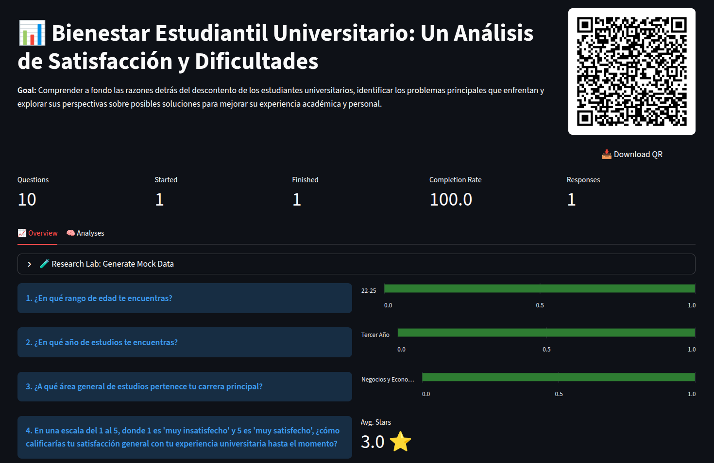

VoxPopuli is an AI-powered qualitative research platform that eliminates the tradeoff between depth and scale. Collect qualitative responses and turn them into structured data instantly.

Go broad and quantitative, or go deep and qualitative. You cannot do both. Until now.
Multiple choice and Likert scales scale easily, but the data is shallow. You only get answers to the questions you thought to ask.
Captures nuance and emotion, but unstructured text is a nightmare to analyze at scale. Processing 500 interviews is a career, not a project.
AI changes the equation. Large language models can now read free-text responses and extract structured, typed, categorical data from them — reliably, at scale, in seconds.
Describe your research goal; AI builds the survey script.
Respondents answer via QR (Text + Voice).
Define what to measure *after* responses are in.
AI reads everything and creates structured data.
Get a 4-layer research report in minutes.
Our AI builds insights bottom-up, from raw numbers to strategic recommendations.
Statistical summaries per-metric with segment breakdowns and contrastive findings.
Synthesizes across metrics to find higher-order themes and hidden patterns.
Poses "why" questions and generates evidence-backed hypotheses with confidence scores.
A stakeholder-ready narrative with key findings and clear, recommended actions.
Respondents can record their voice directly. AI listens, transcribes, and extracts structured data from speech.
No logins, no apps. Respondents scan a QR or click a link and start. High conversion rates guaranteed.
Stress-test your analysis pipeline with AI-generated synthetic participants before launching to real users.
Understand why users churn, what features they value, or how they perceive your concept. Run churn driver analysis or onboarding sentiment in minutes.
Run quarterly pulse surveys with open-ended questions. Get segmented insights by team, role, or tenure without spending weeks on manual coding.
Traditional tools require you to know exactly what to measure *before* you ask. VoxPopuli lets you design the analysis *after* data collection. Change your mind? Define new metrics and let AI re-extract data from the same raw responses.
Yes. VoxPopuli uses Whisper-powered transcription combined with LLM extraction. It analyzes both the text and the voice transcripts to find the structured values you defined in your schema.